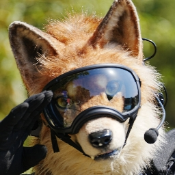
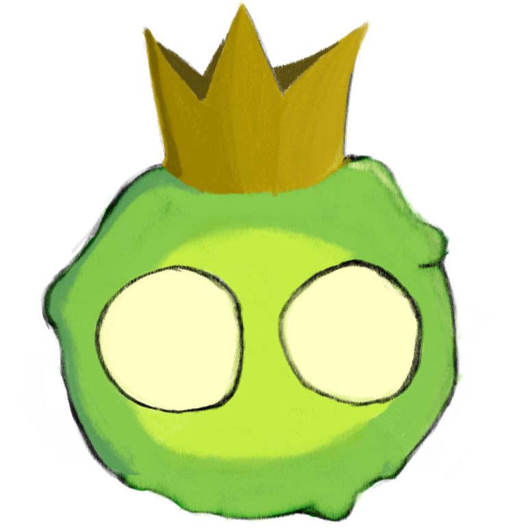
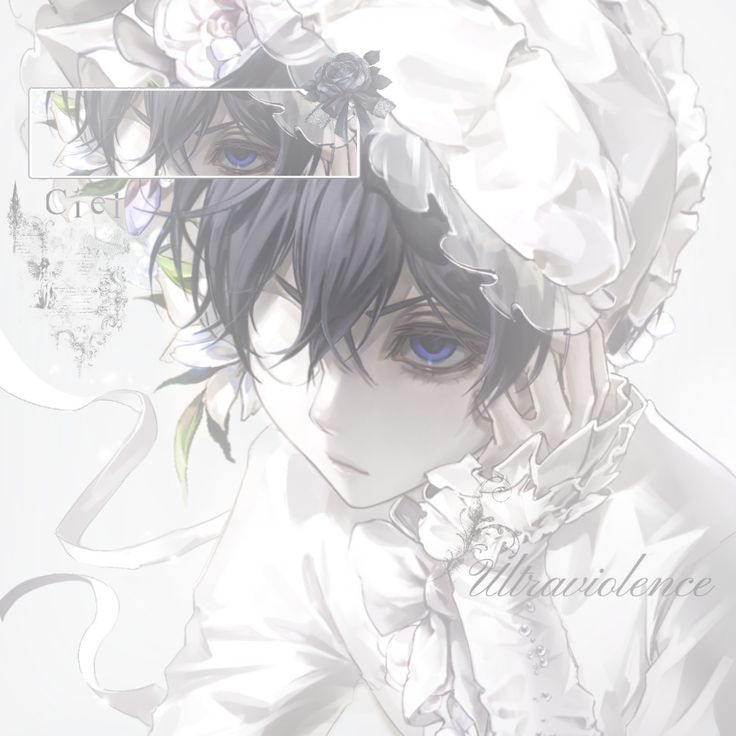
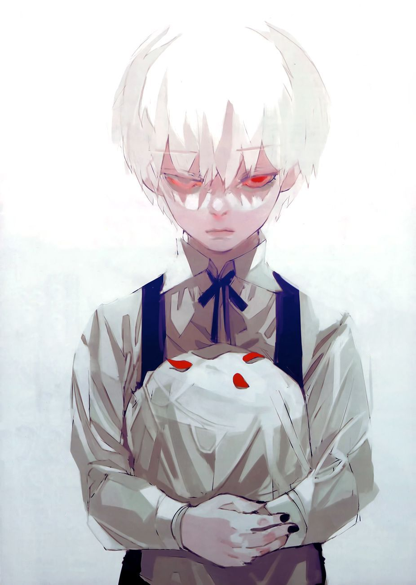
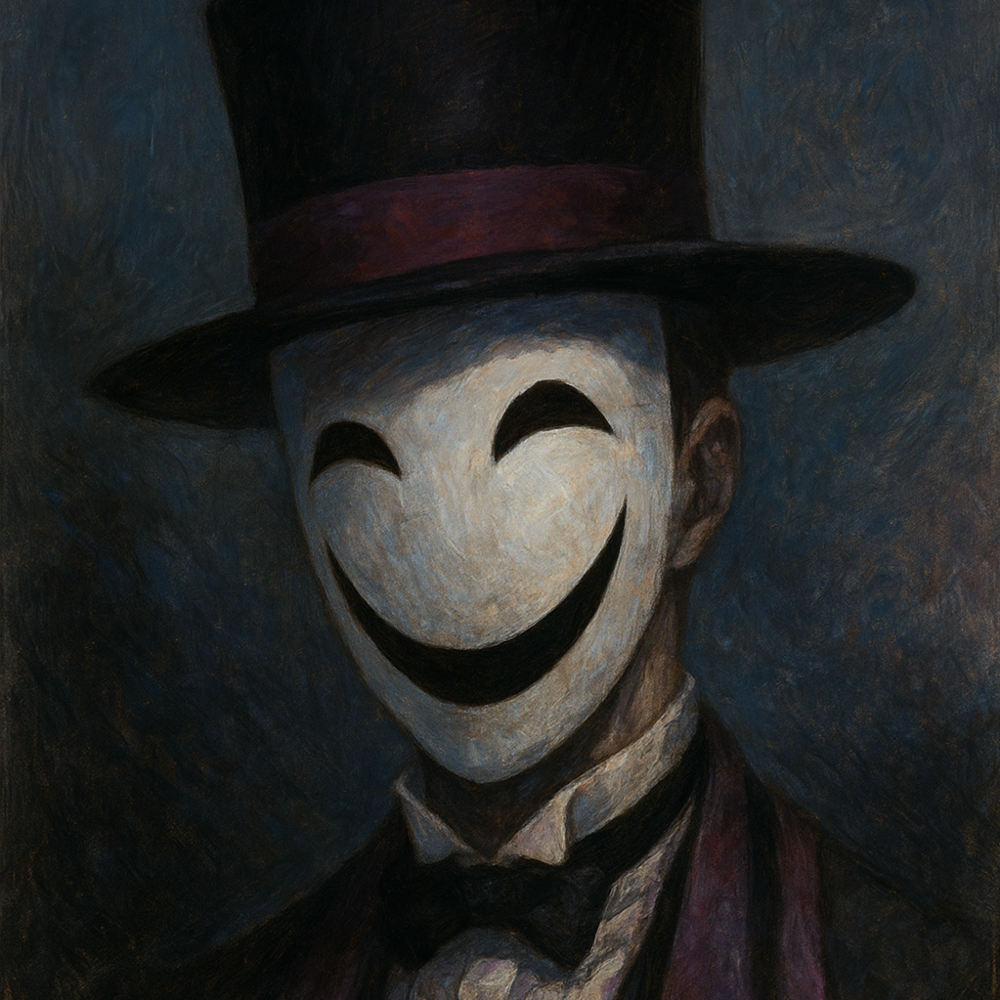
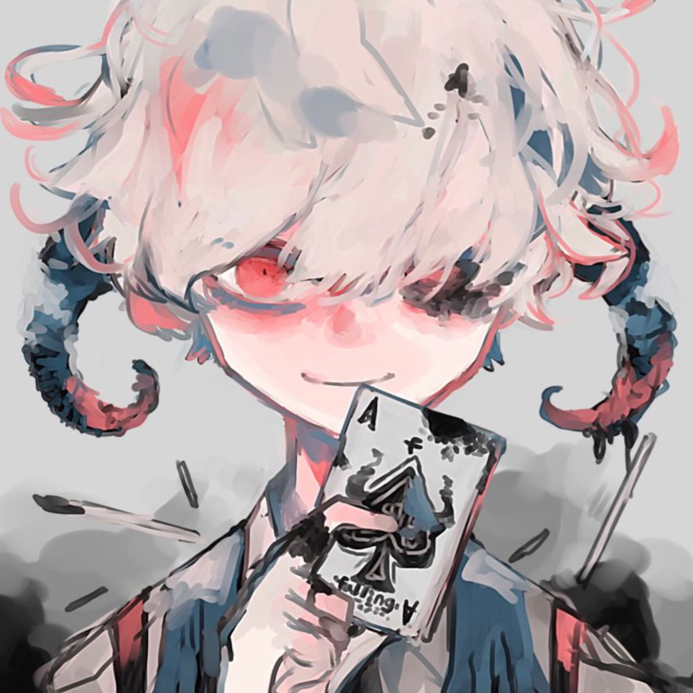
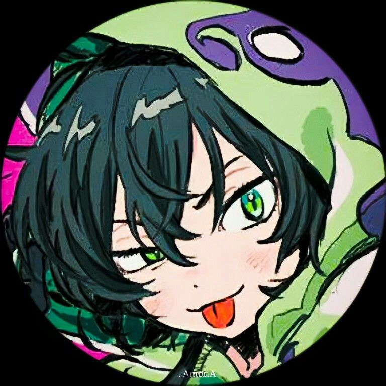

Nossa Equipe
Clique em um membro para conhecê-lo melhor.

SKY @skyson00
Fantasma de SpartaO braço direito do servidor. Melhor jogador de Brawlhalla do servidor inteiro, e no Bedwars é muito bom. Ficou triste com o fim da Redesky, mas tudo se resolveu com um bom café com açúcar. Vai na academia quase sempre quando tira foto lá finge que é músculo, mas todos sabem que são os ossos. No YouTube com mais de 400 mil inscritos, é um bom criador de conteúdo. Um dos seus Shorts com a edit do Max alcançou quase 20 mil visualizações. (titela)
Miojão @sr.miojao
ModeradorMiojão como braço esquerdo do Dono ele mora em Minas Gerais, mais específico no meio do mato de Minas Gerais, como a piada feita pelo Max diz "Se ele pedir um ifood vai ser uma onça que vai ter que entregar". Muito inteligente, mas não tem certeza de qual faculdade fazer. Adora história e com seu título de "Raposa historiadora" se chama de raposa como um verdadeiro furry. Nunca desiste do seu risk of rain junto com o Max, com mais de 200 horas e mais de 100 conquistas ele com certeza é muito paciente.




Vermelho @san_lins_
VIPMembro VIP do K-PACTOS. Sempre presente e parte da turma.


Napo @napo3183
VIPMembro VIP do K-PACTOS. Um nome que o servidor não esquece.
Roy @roy_spookymonth
MembroRoy, a pessoa que nunca entra na call, e quando entra é para fazer o Max jogar jogos de terror, ele ri de tudo o maior bobo alegre, tem uma calopsita maluca que nunca para quieta, e adora desenhar e fazer desenhos que deixa o Max irritado, um desses desenhos foi o Max grávido... Realmente não bate muito bem da cabeça, mas todos adoram o Roy.